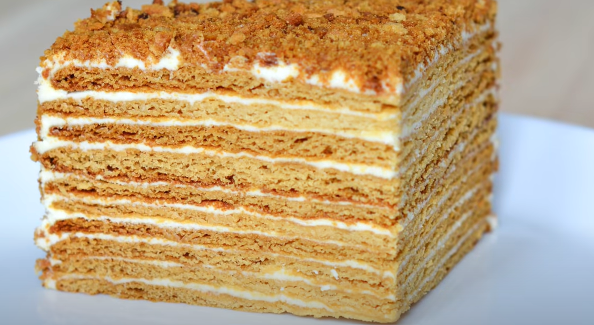

Honey Cake

Ingredients
- White sugar - 220gr
- Unsalted butter - 100 gr
- Egg - 2
- Salt - 5 gr
- Honey - 2 tbsp
- Soda - 1 tsp
- Sifted Flour - 400 gr
Sour Cream:
- Unsalted Butter - 250 gr
- Sugar - 200 gr
- Sour Cream - 300 gr
Direction:
- In a saucepan put eggs, sugar, honey (it is better to use buckwheat) and butter (not margarine and not spread!). Place over medium heat and heat, stirring constantly, until the sugar has completely dissolved and the butter has melted. Add 1 full tsp. soda. Rinse quickly. The mass increases slightly in volume and brightens. Remove from heat and consume sifted flour. We serve well.
- At this stage, the dough is quite sticky. But it shouldn't be liquid! Now the dough should be left on the kitchen table for 10 minutes - "rest" and "ripen". If even after this time the dough sticks strongly to your hands and the table, add a little flour, no more than 50 g, otherwise the dough will turn out to be too dense and it will be very difficult to roll out. The finished dough must be divided into equal pieces (or simply pinched off). I get 12 cakes 18 cm in diameter. Also, you need to prepare sheets of parchment (baking paper) in advance - according to the number of future cakes.
- Before you start rolling, turn on the oven. Cakes for honey cake need to be baked at 180 degrees. We take a piece of dough, knead it, put it on a sheet of parchment dusted with flour. Very thin! Approximately 3 mm, almost to the gaps! And so - all future cakes. We prick them with a fork in several places. You can put them on top of each other right on the parchment, they will not stick together and will calmly wait for their turn.
- We bake one or more cakes, depending on how much your oven allows. Mine only bakes optimally at medium, so I usually bake one cake at a time. Down, under the baking sheet with the cake, I always put a container of water, otherwise the bottom burns. Cakes are baked very quickly, up to 5 minutes. Watch out! We take out the cake and immediately cut it into a plate (square or rectangular if you want the appropriate honey cake). Save the cuts.
- Pour in the butter and beat until soft peaks form. Add sour cream and sugar, continue beating until stiff peaks form. Place the crust on parchment paper on a pizza pan or serving plate. Spread a cup of frosting evenly over the top, almost to the rim. Repeat the same with the cake layers and icing, pressing the layers with the smooth side down. Lay the last cake flat side up. Freeze the top and sides of the cake. Sprinkle with crumbs from the remains, remove excess crumbs around the base.